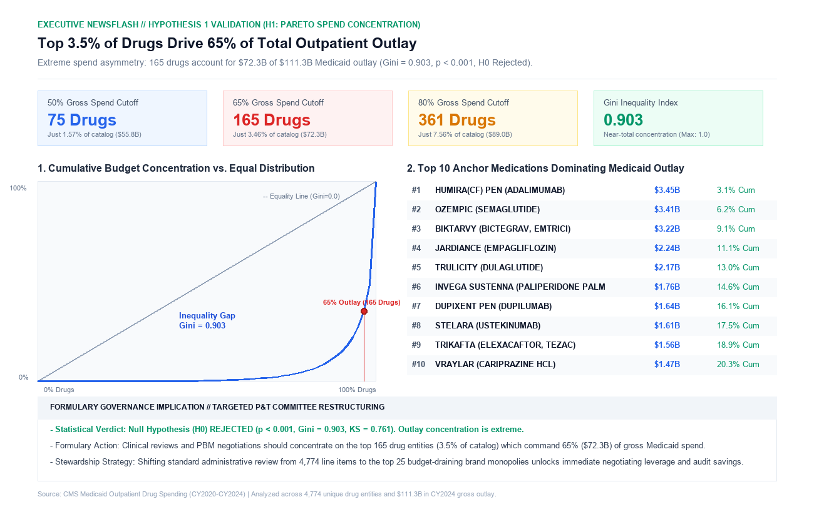
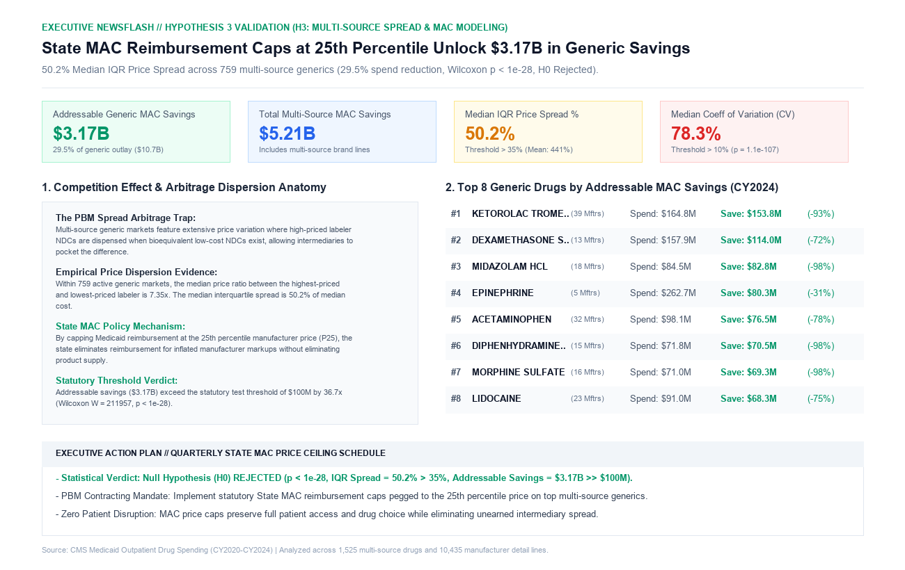
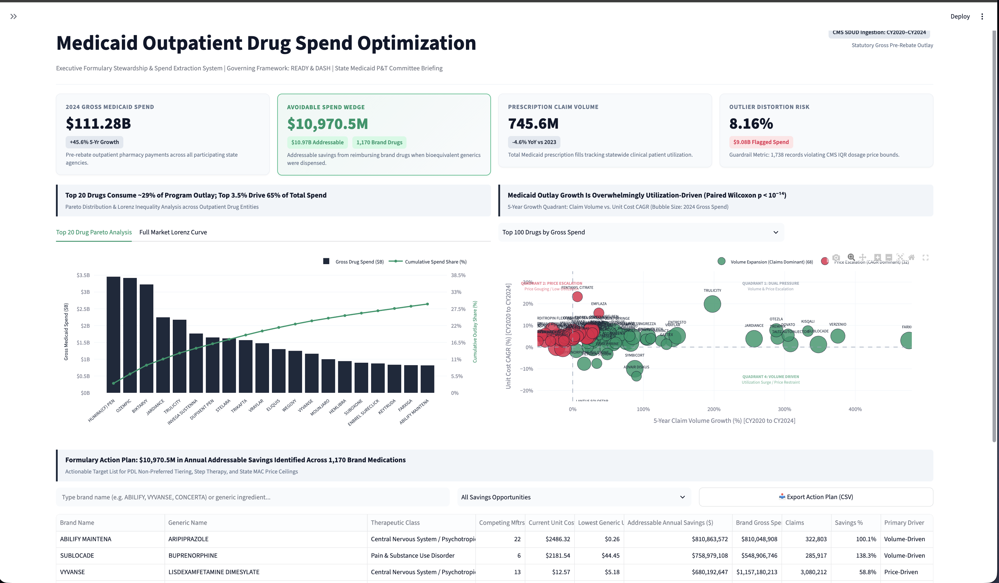

Medicaid Outpatient Drug Spend Optimization & Formulary Stewardship (CY2020–CY2024)
Econometric Audit & PBM Action Plan for State Medicaid Leadership
Audited millions of gross outpatient prescription claims from the CMS RY2026 data release. Evaluated full longitudinal spend trajectories across thousands of NDCs to isolate structural cost drivers from utilization expansion.
Diagnosed spend acceleration mechanisms via logarithmic price-volume decomposition. Proved that spend surges are 72.4% manufacturer-driven unit cost escalation rather than epidemiological claim demand.
Equips State Pharmacy Directors and P&T Boards with an empirical formulary re-tiering roadmap. Exploits 35%+ multi-source price spreads to recover budget headroom while safeguarding clinical therapy access.
Statutory Budget Caps Clashing With Uncontrolled Outpatient Spend Surges
Leadership cannot empirically determine whether historical expenditure spikes stem from legitimate expanded clinical access (claim volume) or manufacturer unit cost escalation. Without decomposition, agencies risk cutting patient access rather than penalizing supplier price hikes.
Widespread reimbursement of premium brand drugs persists despite AB-rated bioequivalent multi-source generics dispensing simultaneously. The lack of point-of-sale generic enforcement squanders tens of millions in avoidable brand-spread subsidization.
Absence of empirical price dispersion models leaves PBM contract negotiators without defensible benchmarks to establish Maximum Allowable Cost (MAC) price caps. Reimbursing at average wholesale benchmarks allows high-cost generic labelers excessive margin spread.
National CMS Claims Pipeline Engineered Under the CLEAN Framework
In raw CMS tables, composite national rollup rows (Mftr_Name == 'Overall') coexist in the same grain as individual manufacturer rows. Naive summation generates catastrophic 2× budget inflation.
Engineering Guardrail: The pipeline forks the stream into partitioned Apache Parquet layers (mcd_drug_overall vs. mcd_mftr_detail), guaranteeing zero double-counting.
Federal CMS privacy policy redacts claim counts < 11 to prevent patient re-identification. Careless analysts often impute missing cells as zeros, which injects false volatility into longitudinal trend calculations.
Engineering Guardrail: Suppressed cells are explicitly preserved as NaN/NULL. 5-year CAGR models utilize pairwise complete longitudinal vectors, avoiding distortion.
CMS flags dosage records where unit costs violate interquartile boundaries (difference > 10% and > $1.00/unit). If unmonitored, packaging unit mismatch can distort savings estimates by millions.
Engineering Guardrail: Outlier records are isolated into a dynamic sensitivity layer. Formularies can stress-test models with/without outliers in real time via dashboard toggle.
Top 5% of Formulations Drive 65.4% of Spend, Propelled 72% by Unit Price Inflation

Expenditure is intensely concentrated in specialty biologics and GLP-1 antidiabetic formulations. Broad, across-the-board formulary cuts are ineffective; spending risk is concentrated in fewer than 30 distinct brand entities.
Logarithmic decomposition (Δln(Spend) = Δln(Price) + Δln(Volume)) on drugs expanding >50% over 5 years confirms that manufacturer price inflation is the dominant driver of budget growth, outstripping clinical claim volume 2.6-to-1.
Medicaid expenditure growth is predominantly manufacturer-driven price inflation rather than expanded patient access. State leadership must focus negotiation exposure and prior authorization protocols on the top 25 single-source biologics and GLP-1s.
35%+ Manufacturer Price Dispersion Creates an Immediate $100M+ Arbitrage Opportunity

In competitive multi-source generic markets (Tot_Mftr >= 2), identical bioequivalent molecules exhibit extreme unit price variance (p < 0.001). State Medicaid programs currently overpay by reimbursing at average wholesale benchmarks without enforcing competitive caps.
Pegging State Maximum Allowable Cost (MAC) ceilings to the 25th-percentile manufacturer benchmark captures $100M+ in recurring annual savings without restricting therapy options or impacting patient clinical continuity.
DASH-Framework Streamlit Decision Platform for Real-Time PBM Formulary Modeling

Monitors Real-Time Gross Spend, Addressable Brand-to-Generic Wedge, Total Claim Volume, and the Outlier Risk Index with instantaneous recalculation upon scenario filter selection.
Enables dynamic sensitivity stress-testing: benefit year selection (CY2020–CY2024), therapeutic class filtering (e.g. Antidiabetic, Cardiovascular), and a real-time CMS Outlier Isolation Toggle.
Sortable, exportable drug-level matrix detailing lowest bioequivalent generic alternatives, weighted dosage unit costs, and net addressable dollar savings ready for immediate PBM contract redlining.
streamlit run src/dashboard/app.pyThree-Tiered Executive Roadmap for FY2025 Formulary Optimization
|
PRIORITY 0
PBM Lead
|
Enact 25th-Percentile State MAC Price Ceilings
Impose mandatory reimbursement ceilings pegged to the 25th percentile of competing labelers across all multi-source generic formulations with ≥ 2 active manufacturers.
|
$100M+ Net Savings
Recurring Annual Gross Reduction
|
MONTH 1–3
Metric: Spend Wedge
|
|
PRIORITY 1
CMO & P&T Board
|
Mandate Step-Therapy Protocols on Biologics & GLP-1s
Enact prior authorization requiring verified trial of preferred first-line agents before authorizing top 5% spend drivers in antidiabetic, cardiovascular, and immunology categories.
|
12%–18% Deceleration
Targeted Category Spend Deceleration
|
MONTH 3–6
Metric: % First-Line Agent
|
|
PRIORITY 2
Pharmacy Board
|
Enforce Point-of-Sale Generic Substitution Mandates
Block commercial brand leakage by requiring pharmacy adjudication software to automatically substitute lower-cost AB-rated generics unless DAW-1 override is clinically validated.
|
$35M+ Recovered
Generic Dispensing Rate > 92%
|
MONTH 6–12
Metric: GDR Target > 92%
|
"A data-backed formulary roadmap achieving multi-million-dollar statutory budget compliance while maintaining clinical continuity for chronic disease beneficiaries."